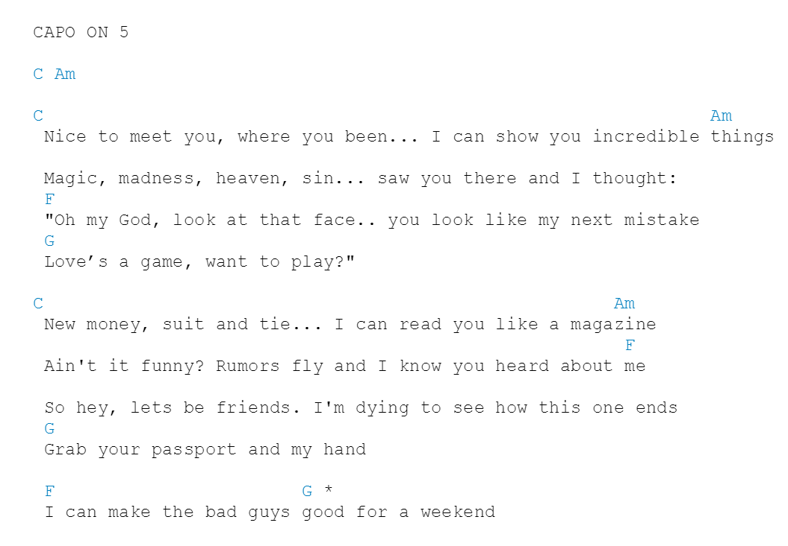

Capoless
|  |  |
|---|---|
| before | after |
What
Capoless is a Chrome extension that automatically translates the chord names on a page of guitar chords to the actual chords that they will be after they are capoed.
Why
I created this Chrome extension because I'm a piano player who wants to play the chord progressions of pop songs. Pop song chords are usually most accessible online through guitar tabs.
However, chords online are often written to be played with a capo, which means each chord is raised a certain amount of half-steps, depending on which fret the capo is placed. As a piano player, if I want to play the chords in the same original tones, I had to transpose in my head, which was a hassle while playing.
With this Chrome extension, when you visit any page of chords, the chords will automatically be transposed to whatever capo is listed on the page.
(But actually the main reason I made this is because I'll do anything to delay studying for finals.)
Future
Currently, this only works with chords from Ultimate-Guitar, (because that site already has a transpose feature, and so all I had to do was write a parser that finds the capo fret and uses the transpose feature with that amount), but the plan is to make this work anywhere.
Stay tuned!!!!!!!!!!!!!!!!!!!
UPDATE December 22, 2014
Capoless now works on all websites! WOOOOOO!!!!
Installation
Download Capoless!!
In Chrome, choose Settings > Extensions. Drag capoless.crx into the page that appears.